본 포스트는 서울대학교 컴퓨터공학부 시스템 프로그래밍(M1522.000800, System Programming, Fall 2026) 강의 자료 중 6강 — Memory Abstraction: Recap — Variables and Memory (총 49장)를 바탕으로, 강의를 처음 듣는 독자도 논리적 흐름을 따라갈 수 있도록 재구성한 것입니다. 원본 슬라이드는 영문으로 작성되어 있으며, 본문의 대섹션 구분은 강의 첫머리의 Lecture Outline 슬라이드(Motivating Example → Variables and Memory → Pointers and Memory Allocation → Data Types and Alignment → Composite Data Structures → Parameter Passing → Summary)를 그대로 따랐습니다. 제목이 Recap인 데서 드러나듯 이 강의는 메모리 추상화(Memory Abstraction) 단원의 도입부로, C 언어 수준에서 이미 알고 있던 변수·포인터·구조체를 기계 수준의 주소와 바이트로 다시 읽어 내는 데 목적이 있습니다.
한 줄 요약 (TL;DR)
“변수는 데이터가 아니라 데이터가 놓인 메모리 주소에 붙인 이름표이고, 고급 언어의 모든 자료구조는 결국 ’시작 주소 + 오프셋’이라는 산술로 환원됩니다.”
이번 강의는 하나의 관측에서 출발합니다. 같은 프로그램을 두 번 실행하면 변수의 주소가 매번 달라지고(ASLR), 여러 프로세스가 동시에 돌면 서로 다른 프로세스가 완전히 같은 주소를 출력하면서도 서로 다른 값을 읽습니다. 이 모순처럼 보이는 현상이 메모리 추상화 단원 전체의 동기입니다. 그 답을 준비하기 위해 강의는 밑바닥부터 다시 쌓아 올립니다 — 변수 이름은 주소의 별칭(alias)이고, 포인터는 그 주소를 명시적으로 담은 변수이며, 기계가 아는 타입은 정수·부동소수점·벡터뿐이어서 배열·구조체·공용체 같은 복합 자료구조는 컴파일러가 오프셋 계산으로 흉내 내는 허구입니다. 그 흉내를 가능하게 하는 규칙이 정렬(alignment)이며, 정렬을 맞추려고 끼워 넣는 패딩(padding)이 구조체 크기를 부풀리는 이유까지 계산으로 확인합니다. 마지막으로 값 전달과 참조 전달의 차이가 어셈블리 두세 줄로 어떻게 드러나는지를 봅니다.
1. 동기가 되는 예제 (Motivating Example)
강의는 개념 정의가 아니라 실행 결과 한 장으로 시작합니다. 질문은 단순합니다 — 함수와 변수는 대체 어디에 놓이는가(Where do Functions & Variables go?)
1.1 관측 대상 프로그램 (layout.c)
실험에 쓰이는 프로그램은 전역 변수, 지역 변수, 동적 할당 영역, 그리고 프로세스 사이에 공유되는 영역을 한 번에 갖추고 있습니다. 그리고 자신이 가진 모든 심볼의 주소를 출력합니다.
…
int global_int = 0x1;
int global_arr[N];
int *global_ptr;
struct __shared {
sem_t m; // semaphore
int shared_int;
} *shared;
void foo(void) { … }
void bar(unsigned int key, int val) { … }
int main(int argc, char *argv[])
{
int local_arr[1024];
int local_k, local_v;
…출력부는 함수의 주소(&foo, &bar, &main), 전역 변수의 주소, 지역 변수의 주소, 그리고 포인터가 가리키는 곳의 주소를 차례로 찍습니다.
printf("[%d] Memory addresses\n"
" &foo(): %p\n"
" &bar(): %p\n"
" &main(): %p\n"
"\n"
" &global_int: %p\n"
" &global_arr: %p\n"
" &global_ptr: %p\n"
"\n"
" &local_arr: %p\n"
" &local_k: %p\n"
" &local_v: %p\n"
"\n"
" global_ptr: %p\n"
" shared_ptr: %p\n"
"\n\n",
pid,
&foo, &bar, &main,
&global_int, &global_arr, &global_ptr,
&local_arr, &local_k, &local_v,
global_ptr, &shared->shared_int);
…여기서 미리 눈여겨볼 것은 마지막 두 줄입니다. 앞의 항목들이 전부 &로 시작하는 변수 자신의 주소인 반면, global_ptr과 shared->shared_int는 포인터가 가리키는 대상의 주소입니다. 이 구분이 이후 3장의 주제가 됩니다.
1.2 ASLR이 꺼져 있을 때 (Older kernels / ASLR disabled)
먼저 주소 공간 배치 무작위화(address space layout randomization, ASLR)가 없거나 꺼져 있는 환경에서 같은 프로그램을 두 번 실행합니다.
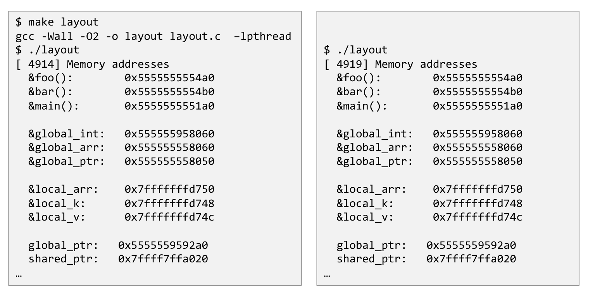
./layout을 두 번 따로 실행한 결과를 나란히 놓은 화면입니다. 왼쪽 상자는 make로 빌드한 뒤의 첫 실행(PID [ 4914]), 오른쪽 상자는 같은 바이너리의 두 번째 실행(PID [ 4919])이며, 대괄호 안의 PID만 다르고 그 아래 모든 주소가 한 글자도 다르지 않습니다. 주소들은 세 무리로 나뉘어 있습니다 — &foo()·&bar()·&main()의 0x5555555554a0, 0x5555555554b0, 0x5555555551a0은 코드가 놓인 영역이고, &global_int·&global_arr·&global_ptr의 0x555555958060, 0x555555558060, 0x555555558050은 전역 변수 영역으로 코드 바로 위에 붙어 있습니다. 반면 &local_arr·&local_k·&local_v의 0x7fffffffd750, 0x7fffffffd748, 0x7fffffffd74c는 0x7fff…로 시작해 자릿수부터 확연히 다른 높은 주소에 있는데, 이것이 스택입니다. 마지막 두 줄의 global_ptr: 0x5555559592a0(힙)과 shared_ptr: 0x7ffff7ffa020(매핑된 공유 영역)은 변수 자신이 아니라 가리키는 대상의 주소입니다. 요컨대 이 화면은 “실행할 때마다 주소가 같다”와 “주소의 상위 자릿수만 봐도 영역이 구분된다”는 두 사실을 동시에 보여 줍니다.두 실행의 주소가 완전히 동일합니다. 즉 프로그램의 메모리 배치가 결정적(deterministic)이며, 링커와 로더가 정해 둔 자리에 매번 같은 방식으로 올라갑니다.
1.3 ASLR이 켜져 있을 때 (Recent kernels with ASLR)
같은 프로그램을 최신 커널에서 ASLR을 켠 채 두 번 실행하면 그림이 달라집니다.
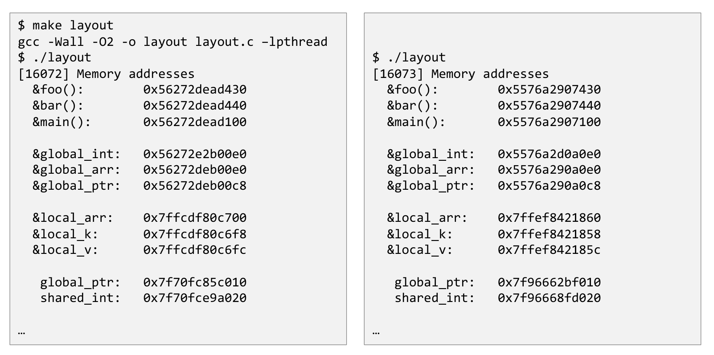
./layout을 두 번 실행한 결과입니다. 왼쪽은 PID [16072], 오른쪽은 [16073]이며, 이번에는 같은 항목끼리 비교해도 주소가 전부 다릅니다 — &foo()가 왼쪽에서는 0x56272dead430, 오른쪽에서는 0x5576a2907430이고, &local_arr도 0x7ffcdf80c700 대 0x7ffef8421860으로 갈립니다. 그러나 자세히 보면 달라지는 것은 상위 자릿수뿐입니다. 왼쪽에서 &foo()와 &bar()의 차이가 0x10이듯 오른쪽에서도 0x10이고, &local_arr와 &local_k의 관계도 양쪽에서 동일합니다. 즉 영역 전체가 통째로 임의의 위치로 옮겨졌을 뿐, 영역 안에서의 상대적 배치는 그대로라는 사실이 이 두 상자를 겹쳐 보면 드러납니다. 이것이 ASLR의 정확한 동작이며, 공격자가 특정 주소를 미리 알고 있다고 가정하는 공격을 어렵게 만드는 장치입니다.프로그램의 배치가 매번 같다면, 공격자는 “이 바이너리에서 system()의 주소는 항상 이 값”이라는 지식을 그대로 재사용할 수 있습니다. ASLR은 영역의 시작 주소에 매번 다른 난수를 더해 그 전제를 무너뜨립니다.
주목할 점은 무작위화가 영역 단위로 일어난다는 것입니다. 3.2절에서 보게 되듯 배열의 원소 주소는 시작 주소 + i × 원소 크기로 계산되는데, 시작 주소가 매번 달라져도 이 산술은 그대로 성립합니다. 즉 ASLR은 프로그램의 내부 논리를 전혀 건드리지 않고 외부에서 관측되는 절대 주소만 흔듭니다.
1.4 여러 프로세스가 동시에 돌 때 — “How is that possible?”
여기서 강의가 진짜로 던지려던 질문이 나옵니다. 같은 프로그램을 멀티프로세스 버전으로 실행합니다. 프로그램은 자기 자신의 복제본을 \(n\)개 만들고, 모든 복제본이 두 변수 global_int와 shared_int를 반복해서 증가시킵니다.
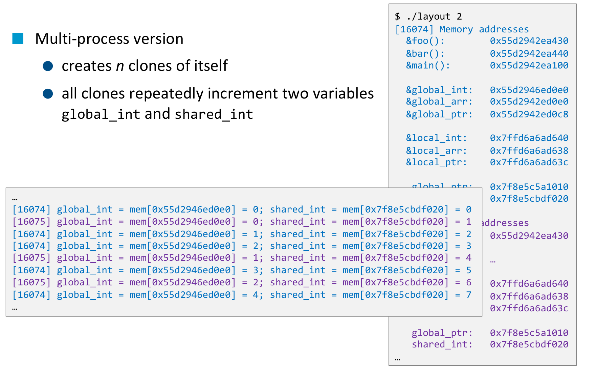
./layout 2로 프로세스 두 개를 띄운 뒤의 로그입니다. 오른쪽 위 상자는 앞 절과 같은 주소 출력이고, 앞쪽으로 겹쳐 나온 왼쪽 아래 상자가 이 그림의 핵심입니다. 각 줄은 [PID] global_int = mem[주소] = 값; shared_int = mem[주소] = 값 형식이며, 파란색 [16074]와 보라색 [16075] 두 프로세스의 줄이 뒤섞여 나타납니다. 결정적인 관측은 두 가지입니다. 첫째, 두 프로세스가 출력하는 global_int의 주소가 0x55d2946ed0e0으로 완전히 동일한데도 그 자리에서 읽히는 값은 서로 독립적으로 증가합니다 — [16074]는 0, 1, 2, 3, 4로 올라가고 [16075]는 같은 주소에서 0, 1, 2로 따로 셉니다. 둘째, shared_int의 주소 0x7f8e5cbdf020 역시 두 프로세스에서 동일하지만, 이쪽은 값이 0, 1, 2, 3, 4, 5, 6, 7로 두 프로세스를 가로질러 하나의 수열을 이룹니다. 즉 같은 숫자로 보이는 주소가 한쪽에서는 프로세스마다 따로인 저장소를, 다른 쪽에서는 모두가 공유하는 하나의 저장소를 가리킵니다. 슬라이드 아래에 적힌 “How is that possible?”이 이 단원 전체가 답해야 할 질문입니다.관측 결과를 정리하면 이렇습니다.
| 변수 | 두 프로세스가 출력한 주소 | 그 자리에서 읽히는 값 | 선언 위치 |
|---|---|---|---|
global_int |
동일 (0x55d2946ed0e0) |
프로세스마다 독립 | 전역 변수 |
shared_int |
동일 (0x7f8e5cbdf020) |
두 프로세스가 공유 | struct __shared가 가리키는 공유 영역 |
global_int는 평범한 전역 변수이고, shared_int는 1.1절의 struct __shared(세마포어 sem_t m과 함께 묶여 있었습니다)가 가리키는 프로세스 간 공유 영역 안에 있습니다. 두 변수가 같은 종류의 저장소에 있지 않다는 사실은 코드에서 이미 드러나 있었던 셈입니다.
같은 숫자로 표현된 주소가 어떻게 프로세스마다 다른 저장소를 가리킬 수 있는가?
이 질문이 성립한다는 것은, 우리가 지금까지 “주소”라고 불러 온 숫자가 물리적인 메모리 칸의 번호가 아닐 수도 있다는 뜻입니다. 프로그램이 보는 주소와 하드웨어가 보는 주소 사이에 무언가 한 겹이 끼어 있어야만 위의 관측이 모순 없이 설명됩니다. 그 한 겹이 바로 이 단원의 제목인 메모리 추상화(memory abstraction)입니다.
이번 강의는 그 답을 바로 제시하지 않습니다. 대신 답을 이해하는 데 필요한 주소·크기·정렬의 언어를 먼저 정비합니다. 2장부터가 그 정비 작업입니다.
2. 변수와 메모리 (Variables and Memory)
2.1 변수 정의가 실제로 하는 일
C에서 변수 정의는 <type> <name> 두 조각으로 끝납니다. 예를 들어 int counter처럼 씁니다. 그런데 이 한 줄이 컴파일러에게 시키는 일은 두 가지입니다.
<type> <name>을 보면 컴파일러는
- 데이터를 담을 메모리를 프로세스의 메모리 공간 어딘가에 할당합니다. 이때 할당되는 메모리의 크기 = 타입의 크기입니다.
- 그 데이터를 편리하게 참조할 수 있도록
<name>이라는 이름표(label)를 만듭니다.
두 번째 항목의 표현이 중요합니다. 컴파일러가 만드는 것은 “값을 담는 상자”가 아니라 이름표입니다. 상자는 메모리가 이미 갖고 있고, 이름은 그 상자 중 하나를 가리키기 위한 편의일 뿐입니다.
2.2 변수 이름은 주소의 별칭이다
이 점을 가장 선명하게 보여 주는 예가 다음 한 줄입니다.
int a = 5, b = 7, c;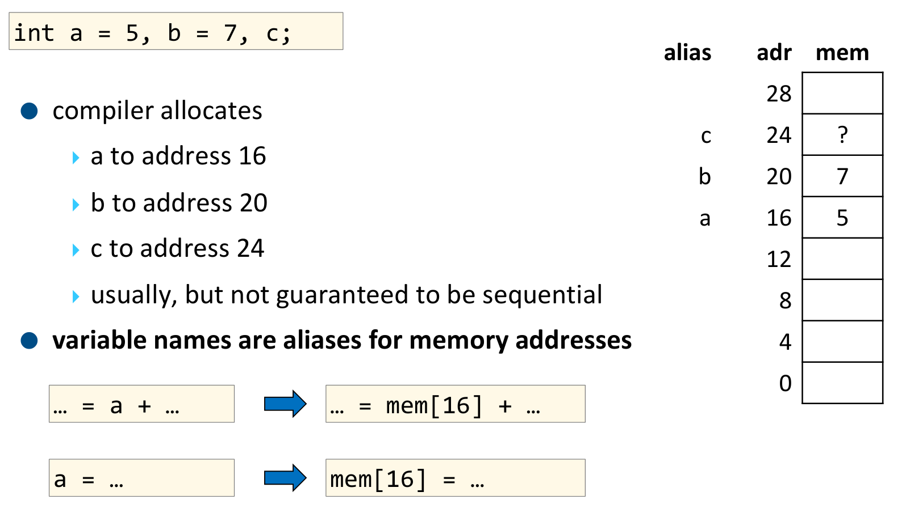
alias(별칭) · adr(주소) · mem(메모리 내용) 세 열로 되어 있고, 주소는 아래에서 위로 0, 4, 8, 12, 16, 20, 24, 28이 4씩 증가하며(int가 4바이트이므로), mem 칸에는 실제 저장된 값이 들어갑니다. 컴파일러는 a를 주소 16, b를 20, c를 24에 배치했고, 그래서 주소 16 칸에는 5가, 20 칸에는 7이 들어 있으며, 초기화하지 않은 c의 자리인 24 칸에는 ?가 적혀 있습니다 — 값이 없는 것이 아니라 무엇이 들어 있는지 알 수 없다는 뜻입니다. 왼쪽 아래의 두 화살표가 이 그림의 결론입니다. 소스 코드의 … = a + …는 기계 수준에서 … = mem[16] + …로, a = …는 mem[16] = …로 번역됩니다. 즉 이름 a는 읽을 때나 쓸 때나 주소 16으로 치환될 뿐이며, 이것이 “변수 이름은 메모리 주소의 별칭”이라는 문장의 정확한 의미입니다.여기서 강의가 덧붙이는 단서 하나를 놓치면 안 됩니다.
위 그림에서 a, b, c가 16, 20, 24에 나란히 놓인 것은 흔한 일이지 약속된 일이 아닙니다. 슬라이드의 표현 그대로 “usually, but not guaranteed to be sequential”입니다.
컴파일러는 4장에서 볼 정렬 규칙을 지키는 한, 그리고 언어 표준이 요구하는 의미를 보존하는 한 변수를 어디에 놓든 자유입니다. 따라서 &b - &a가 4일 것이라고 가정하고 쓴 코드는 언제든 깨질 수 있습니다. 이런 가정이 정당한 경우는 배열과 구조체뿐이며, 그때조차 “몇 바이트 떨어져 있는가”는 5장에서 보듯 패딩까지 계산해야 나옵니다.
2.3 데이터는 메모리의 어디에 할당되는가
변수마다 놓이는 자리가 다릅니다. 다음 코드 조각에는 네 종류의 데이터가 섞여 있습니다.
int a = 5;
const int b = 7;
int c;
int foo(int a, int b)
{
int e, f, g;
char *m = malloc(10);
}- 전역 변수(global variables) —
a,b,c→ data / rodata / bss 섹션 - 지역 변수(local variables) —
e,f,g→ 사용자 스택(user stack) - 동적으로 할당된 데이터(dynamically allocated data) —
malloc(10)이 돌려준 10바이트 → 힙(heap) - 함수 파라미터(function parameters) —
foo의a,b는? → 이 질문은 6장에서 답합니다.
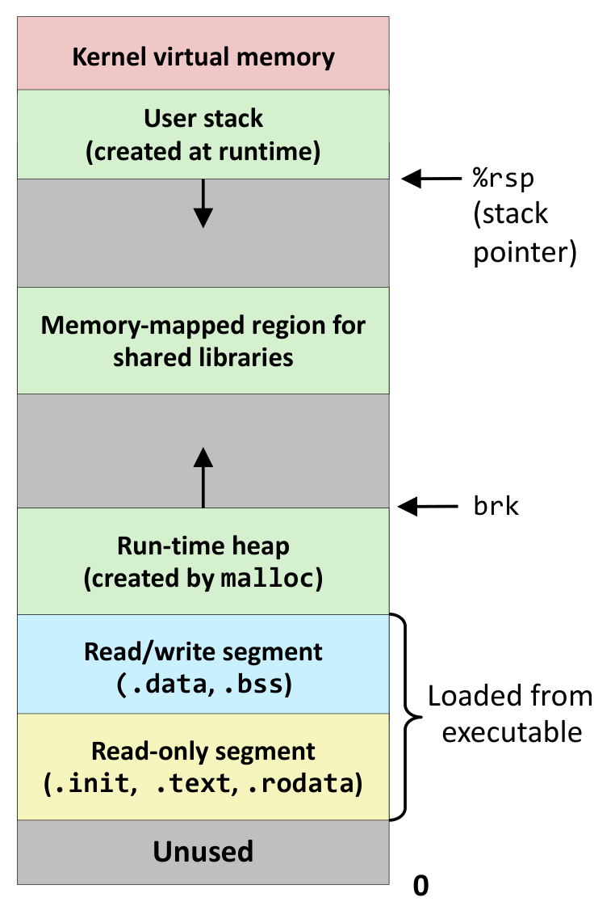
0에서 시작해 Unused(접근하면 곧바로 오류가 나도록 비워 둔 영역), 그 위에 노란색 Read-only segment (.init, .text, .rodata), 하늘색 Read/write segment (.data, .bss)가 놓이고, 오른쪽의 중괄호와 “Loaded from executable”이라는 문구가 이 두 segment가 실행 파일에서 그대로 읽어 들여진 부분임을 표시합니다. 그 위 연두색 Run-time heap (created by malloc)은 실행 중에 자라는 영역으로, 오른쪽 화살표가 가리키는 brk가 현재 힙의 끝을 나타내며 위쪽을 향한 화살표는 힙이 주소가 커지는 방향으로 자란다는 뜻입니다. 더 위의 연두색 Memory-mapped region for shared libraries는 공유 라이브러리가 매핑되는 자리이고, 1.4절의 shared_int가 0x7f…라는 높은 주소를 가졌던 이유도 여기 있습니다. 맨 위 연두색 User stack (created at runtime)에는 오른쪽에서 %rsp (stack pointer)가 현재 스택 꼭대기를 가리키고 있으며, 아래쪽을 향한 화살표는 스택이 힙과 반대 방향으로, 즉 주소가 작아지는 쪽으로 자란다는 사실을 나타냅니다. 두 화살표가 마주 보고 있다는 점이 핵심입니다 — 힙과 스택은 가운데의 회색 빈 공간을 사이에 두고 서로를 향해 자랍니다. 맨 위 분홍색 Kernel virtual memory는 커널이 차지하는 영역으로 사용자 프로그램이 직접 건드릴 수 없습니다.이 그림을 1.2절의 주소들과 겹쳐 보면 관측과 구조가 맞아떨어집니다. 함수와 전역 변수가 0x5555…라는 낮은 주소를, 지역 변수가 0x7fff…라는 높은 주소를 가졌던 것은 전자가 그림의 아래쪽(실행 파일에서 적재된 부분과 힙), 후자가 위쪽(스택)에 있기 때문입니다.
3. 포인터와 메모리 할당 (Pointers and Memory Allocation)
3.1 포인터 (Pointers)
2장의 결론은 “변수 이름은 주소의 별칭”이었습니다. 그런데 별칭만 갖고는 그 주소가 몇 번인지 알 수 없습니다. 컴파일러는 알지만 프로그래머는 모르고, 프로그램 자신도 모릅니다.
- 변수 이름은 메모리 주소의 별칭이지만, 우리는 그 주소가 무엇인지 직접 알지 못합니다.
- 포인터(pointer)는 명시적인 메모리 주소입니다. 다음 두 경우에 필요합니다.
- 메모리를 동적으로 할당해야 할 때
- 어떤 주소가 메모리의 어디인지 알아야 할 때
- 포인터는 배열을 가리키는 데 사용됩니다.
앞의 예에 포인터를 하나 덧붙여 봅니다.
int a = 5, b = 7, c;
int *ap = &a;
…
int **app = ≈
…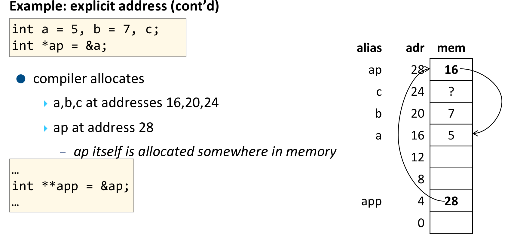
alias/adr/mem 표로 보여 줍니다. 왼쪽 위 코드 상자의 int a = 5, b = 7, c; int *ap = &a;에 따라 컴파일러는 a, b, c를 주소 16, 20, 24에, ap를 주소 28에 배치했고, 아래 코드 상자의 int **app = ≈에 따라 app를 주소 4에 놓았습니다. 표를 읽으면 ap의 자리인 주소 28 칸에 굵은 16이 들어 있고, 거기서 출발한 곡선 화살표가 주소 16 칸(값 5)을 가리킵니다 — 즉 ap에 저장된 것은 a의 값 5가 아니라 a의 주소 16입니다. 마찬가지로 app의 자리인 주소 4 칸에는 굵은 28이 들어 있고, 거기서 나온 긴 곡선 화살표가 위쪽 주소 28 칸을 가리킵니다. 왼쪽 불릿의 이탤릭 문구 “ap itself is allocated somewhere in memory”가 이 그림의 요점입니다 — 포인터도 결국 메모리 한 칸을 차지하는 평범한 변수이며, 다만 그 칸에 담긴 값이 우연히 다른 칸의 번호일 뿐입니다. 이 사실이 있기에 ap의 주소를 다시 담는 app가 아무런 새로운 장치 없이 성립합니다.그림이 말하는 바를 한 문장으로 옮기면 이렇습니다 — 포인터는 “주소를 값으로 갖는 변수”일 뿐 그 이상도 이하도 아닙니다.
ap가 특별한 존재였다면 &ap라는 표현이 성립할 이유가 없습니다. ap 역시 메모리 어딘가(여기서는 주소 28)에 놓인 4바이트 또는 8바이트짜리 칸이기 때문에 그 칸의 주소를 다시 물을 수 있고, 그것을 담는 int **app가 자연스럽게 따라 나옵니다. 삼중 포인터든 사중 포인터든 같은 이유로 성립합니다.
3.2 동적 배열 (Dynamic Arrays)
포인터가 필요한 첫 번째 이유 — 동적 할당을 봅니다.
int *A;
…
A = (int *)malloc(sizeof(int)*1024);
…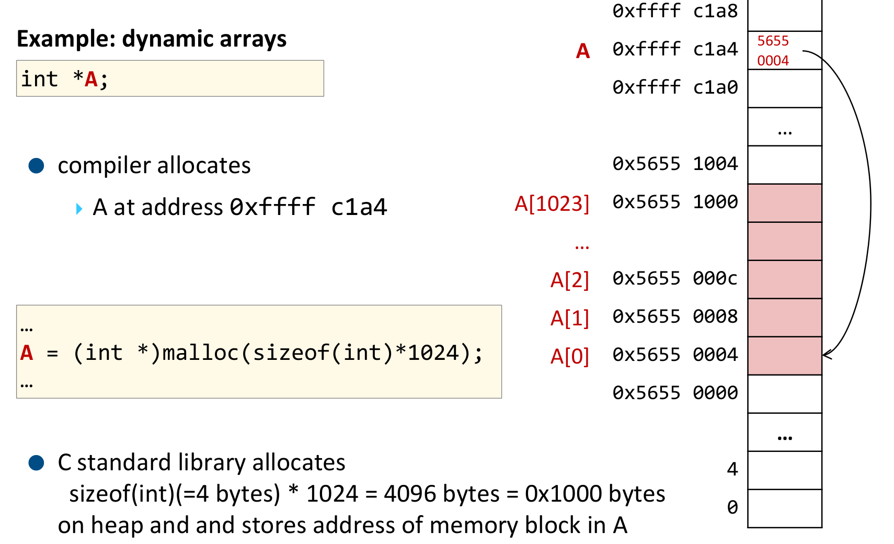
malloc이 한 일을 주소 표로 그린 그림입니다. 표는 세 덩어리로 나뉘어 있습니다. 위쪽에는 포인터 변수 A 자신이 있는데, 컴파일러가 A를 주소 0xffff c1a4(0x7fff… 대역, 즉 2.3절 그림의 스택)에 배치했고 그 칸에는 붉은 글씨로 5655 0004가 들어 있습니다. 아래쪽의 분홍색으로 칠해진 연속된 칸들이 malloc이 힙에 잡아 준 메모리 블록으로, A[0]이 0x5655 0004, A[1]이 0x5655 0008, A[2]가 0x5655 000c, …, A[1023]이 0x5655 1000에 각각 대응합니다. 두 덩어리를 잇는 오른쪽의 긴 곡선 화살표가 A의 칸에서 출발해 A[0]의 칸을 가리키며, 이것이 “포인터가 힙 블록을 가리킨다”는 말의 그림입니다. 아래 설명이 계산을 확인해 줍니다 — C 표준 라이브러리가 sizeof(int)(= 4바이트) × 1024 = 4096바이트 = 0x1000바이트를 힙에 할당하고 그 블록의 주소를 A에 저장했으며, 실제로 마지막 원소의 주소 0x5655 1000에서 시작 주소 0x5655 0004를 빼면 0xFFC = 4092 = 1023 × 4로 딱 들어맞습니다. 주목할 점은 A는 스택에, A가 가리키는 1024개의 정수는 힙에 있다는 분리입니다.주소 산술이 정확히 맞아떨어지는지 확인해 두면 이후 5장의 배열 공식이 쉽게 읽힙니다.
\[ \mathrm{adr}(A[i]) = A + i \times \texttt{sizeof(int)} = \texttt{0x56550004} + 4i \]
\(i = 1023\)을 넣으면 \(\texttt{0x56550004} + 4092 = \texttt{0x56551000}\)으로, 그림의 마지막 칸과 일치합니다.
3.3 배열과 포인터, 그리고 C (Arrays, Pointers, and C)
강의가 초보자가 자주 혼동한다(often confusing for beginners)고 명시한 대목입니다. 핵심은 두 문장입니다.
① 동적으로 할당된 배열은 포인터입니다.
char *p = malloc(512 * sizeof(char));p는p[512]의 데이터를 가리키는 포인터입니다.p[0]은 배열p의 첫 번째 원소를 가리킵니다.&p[0]은p의 첫 번째 원소의 주소를 뜻하며,p와 동일합니다.
② 정적으로 할당된 배열도 포인터처럼 취급됩니다.
char buf[512];buf는buf[512]의 데이터를 가리키는 포인터입니다.buf[0]은 배열buf의 첫 번째 원소를 가리킵니다.&buf[0]은buf의 첫 번째 원소의 주소를 뜻하며,buf와 동일합니다.
말로만 보면 두 경우가 완전히 같아 보입니다. 실제로 실행해 확인합니다.
#include <stdio.h>
#include <stdlib.h>
int main(int argc, char *argv[])
{
char buf[512] = { 'A', 'B', 'C', };
printf(" buf: %14p\n", buf);
printf(" buf[0]: %14c\n", buf[0]);
printf(" &buf[0]: %14p\n", &buf[0]);
printf("\n");
char *p = (char*)malloc(512 * sizeof(char));
p[0] = 'A'; p[1] = 'B'; p[2] = 'C';
printf(" p: %14p\n", p);
printf(" p[0]: %14c\n", p[0]);
printf(" &p[0]: %14p\n", &p[0]);
printf("\n");
free(p);
return EXIT_SUCCESS;
}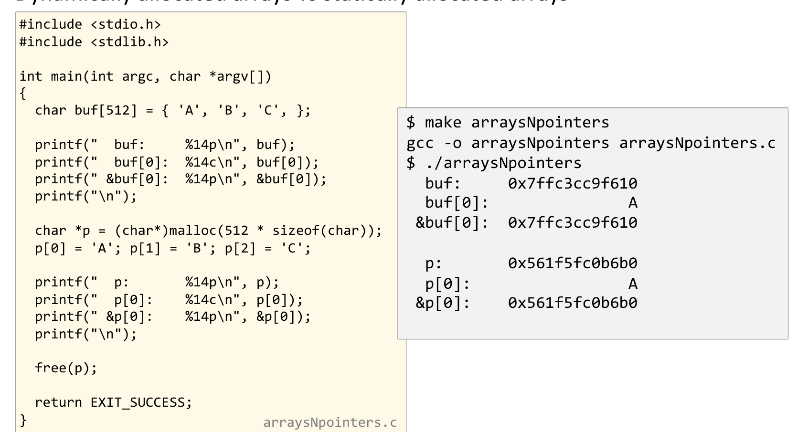
arraysNpointers.c를 빌드해 실행한 결과입니다. 왼쪽 상자가 소스, 오른쪽 상자가 출력이며, 출력에서 확인할 것은 두 쌍의 주소가 각각 서로 같다는 사실입니다. 정적 배열 쪽에서는 buf가 0x7ffc3cc9f610, &buf[0]도 똑같이 0x7ffc3cc9f610이고, 동적 배열 쪽에서도 p가 0x561f5fc0b6b0, &p[0]도 똑같이 0x561f5fc0b6b0입니다. 즉 배열 이름 자체가 첫 원소의 주소이며, 이 성질에 관한 한 정적 배열과 동적 배열은 구별되지 않습니다. 동시에 두 쌍 사이의 차이도 드러납니다 — buf는 0x7ffc…로 시작해 스택에 있고 p가 가리키는 블록은 0x561f…로 시작해 힙에 있습니다. 가운데의 buf[0]과 p[0]이 모두 문자 A를 출력하는 것은 두 배열의 첫 원소에 같은 값을 넣었기 때문이며, 주소가 아니라 값을 보여 주기 위해 %14c로 찍은 것입니다.그런데 두 배열이 완전히 같지는 않습니다. 강의가 “이해했는지 점검해 보라(Test your understanding)”며 내놓는 네 개의 코드 조각이 그 차이를 드러냅니다.
sizeof가 배신하는 지점
정적 배열에서는 sizeof가 배열 전체 크기를 압니다.
char buf[512];
… = read(fd, buf, sizeof(buf)); // OK — sizeof(buf)는 512그러나 동적 배열에서는 그렇지 않습니다.
char *buf = (char*)malloc(512*sizeof(char));
… = read(fd, buf, 512*sizeof(char)); // NOT sizeof(buf)!buf가 이제 포인터 변수이므로 sizeof(buf)는 배열의 크기 512가 아니라 포인터 자신의 크기(64비트에서 8)를 돌려줍니다. 512바이트를 읽으려다 8바이트만 읽게 됩니다. 컴파일러는 이를 오류로 잡아 주지 않습니다 — 두 표현 모두 문법적으로 완벽히 정당하기 때문입니다.
크기를 손으로 적는 것이 불안하다면 상수로 묶어 둡니다.
#define BUFSIZE 512
char *buf = (char*)malloc(BUFSIZE*sizeof(char));
… = read(fd, buf, BUFSIZE*sizeof(char));반대 방향의 함정도 있습니다. 배열이 아닌 단일 변수를 넘길 때는 &를 빠뜨리면 안 됩니다.
char buf;
… = read(fd, &buf, sizeof(char)); // NOT buf!buf가 배열일 때는 이름 자체가 주소였지만, 단일 char 변수일 때 buf는 그냥 값입니다. 그 값을 주소로 착각해 넘기면 엉뚱한 곳에 쓰게 됩니다. 결국 “배열 이름은 주소”라는 편의가 단일 변수에는 적용되지 않는다는 것이 이 네 조각이 함께 말하는 바입니다.
4. 데이터 타입과 정렬 (Data Types and Alignment)
4.1 기계 수준의 데이터 타입 (Data Types at the Machine Level)
고급 언어에는 타입이 풍부하지만, 기계가 아는 타입은 놀랄 만큼 적습니다.
- 정수 데이터(integer data) — 1, 2, 4, 8바이트
- 데이터 값(data values)
- 주소(addresses) — 타입이 없는 포인터(untyped pointers)
- 부동소수점 데이터(floating point data) — 4, 8, 10, 16바이트
- 요즘은 여기에 벡터 데이터 타입(vector data types)이 더해집니다.
강의가 굵은 글씨로 강조하는 문장은 다음과 같습니다.
No aggregate types such as arrays or structures — Just contiguously allocated bytes in memory
배열이나 구조체 같은 집합 타입(aggregate type)은 기계 수준에 존재하지 않습니다. 기계가 보는 것은 메모리에 연속적으로 할당된 바이트들뿐입니다.
그렇다면 C의 struct와 []는 무엇이었을까요. 그것은 컴파일러가 오프셋 계산으로 유지하는 허구입니다. s.member라는 표현은 기계 수준에서 “구조체 시작 주소 + 그 멤버까지의 오프셋”이라는 덧셈 한 번으로 번역되고, a[i]는 “배열 시작 주소 + i × 원소 크기”라는 곱셈 한 번과 덧셈 한 번으로 번역됩니다. 5장 전체가 이 두 산술의 정확한 형태를 구하는 작업입니다.
주소 자체가 “타입이 없는 정수”라는 점도 같은 맥락입니다 — 포인터 연산이 정수 연산과 다를 바 없는 이유가 여기에 있습니다.
4.2 C 데이터 타입의 크기 (Data Types)
같은 C 코드라도 아키텍처가 달라지면 타입의 크기가 달라집니다. 강의가 제시하는 표는 다음과 같습니다.
| C 데이터 타입 | Typical 64-bit | x86-64 | Intel IA32 |
|---|---|---|---|
char |
1 | 1 | 1 |
short |
2 | 2 | 2 |
int |
4 | 4 | 4 |
long |
8 | 8 | 4 |
long long |
8 | 8 | 8 |
float |
4 | 4 | 4 |
double |
8 | 8 | 8 |
long double |
8 | 10/16 | 10/12 |
* (포인터) |
8 | 8 | 4 |
__[u]int128_t (소프트웨어로 구현) |
16 | 16 | – |
원본 슬라이드가 붉은색으로 강조하는 줄은 long과 포인터 * 둘뿐입니다. 나머지 타입들이 아키텍처를 옮겨도 크기를 유지하는 데 반해, 이 둘은 x86-64에서 8바이트, IA32에서 4바이트로 갈라지기 때문입니다.
여기서 나오는 전형적인 버그가 포인터를 int에 담는 코드입니다. IA32에서는 둘 다 4바이트라 우연히 동작하지만, x86-64로 옮기는 순간 8바이트 주소가 4바이트 int에 잘려 들어가 상위 절반이 날아갑니다. 같은 이유로 int와 long을 서로 바꿔 쓸 수 있다는 가정도 64비트에서 깨집니다.
long double이 같은 x86-64 안에서도 10/16으로 적혀 있는 것은 저장 형식의 크기와 메모리에서 실제로 차지하는 크기가 다르기 때문입니다 — 확장 정밀도 형식 자체는 10바이트지만, 다음 절에서 볼 정렬 규칙 때문에 메모리에서는 16바이트를 차지합니다.
4.3 데이터 정렬 (Data Alignment)
정렬(alignment)은 데이터가 메모리의 어느 위치에 놓일 수 있는가에 관한 규칙입니다.
- 어떤 기계에서는 필수(required)이고, IA32에서는 권고(advised) 사항입니다.
- IA32 Linux, x86-64 Linux, Windows가 이를 각각 다르게 다룹니다.
\(K\)바이트를 요구하는 원시 데이터 타입(primitive data type)은 \(K\)바이트로 정렬된 주소에 놓여야 합니다.
\[ K\text{-byte aligned} \;\Longleftrightarrow\; \text{주소가 } K \text{로 나누어떨어짐} \]
예를 들어 4바이트 정수는 4로 나누어떨어지는 주소에 놓여야 합니다.
- 유효한 주소: 0, 4, 8, 12, 16, …
- 유효하지 않은 주소: 1, 2, 3, 5, 6, 7, 9, 10, 11, …
왜 이런 규칙이 필요한가. 강의가 드는 이유는 두 가지입니다.
- 메모리는 (정렬된) 4바이트 또는 8바이트 덩어리 단위로 접근됩니다(시스템에 따라 다릅니다).
- 따라서 쿼드 워드 경계(quad word boundary)를 걸치는 데이터를 읽거나 쓰는 것은 비효율적입니다. 한 번에 끝날 접근이 두 번의 메모리 접근과 병합 작업으로 늘어납니다.
- 데이터가 두 개의 페이지에 걸치면 가상 메모리 관리가 까다로워집니다. 하나의 값을 읽는 도중에 페이지 폴트가 두 번 일어날 수 있기 때문입니다.
두 번째 이유는 1.4절에서 던져 둔 질문과 이어집니다. 정렬은 단순한 성능 최적화가 아니라 메모리 추상화 계층이 제대로 동작하기 위한 전제이기도 합니다.
4.4 x86-64의 정렬 관례 (x86-64 Data Alignment Conventions)
기본 규칙은 \(K\)바이트 원시 타입은 \(K\)바이트 정렬입니다. 여기에 예외가 하나 붙습니다 — 10바이트 원시 타입(long double, 확장 정밀도)은 16바이트로 정렬됩니다.
| 크기(바이트) | 원시 데이터 타입 | 정렬 (Linux) | 정렬 (Windows) |
|---|---|---|---|
| 1 | char, … |
1 | 1 |
| 2 | short, … |
2 | 2 |
| 4 | int, float, … |
4 | 4 |
| 8 | long, long long, *, double, … |
8 | 8 |
| 16 | __int128_t, long double, … |
16 | 16 |
x86-64에서는 Linux와 Windows의 정렬이 모든 줄에서 일치합니다. 4.2절에서 long double이 10바이트인데도 16바이트를 차지한다고 한 이유가 마지막 줄에 있습니다 — 16바이트 정렬을 요구하므로 6바이트가 낭비되는 셈입니다.
4.5 IA32의 정렬 관례 (IA32 Data Alignment Conventions)
같은 기본 규칙이지만 예외가 둘로 늘고, 처음으로 Linux와 Windows가 갈립니다.
- 10바이트 원시 타입(
long double, 확장 정밀도)은 4바이트 정렬입니다. - 8바이트 원시 타입(
double,long long)은 Linux에서 4바이트, Windows에서 8바이트 정렬입니다.
| 크기(바이트) | 원시 데이터 타입 | 정렬 (Linux) | 정렬 (Windows) |
|---|---|---|---|
| 1 | char, … |
1 | 1 |
| 2 | short, … |
2 | 2 |
| 4 | int, long, *, float, … |
4 | 4 |
| 8 | long long, double, … |
4 | 8 |
| 12 | long double, … |
4 | 4 |
IA32의 long long을 보십시오 — 크기는 8바이트인데 Linux에서의 정렬은 4바이트입니다. 크기가 곧 정렬이라는 기본 규칙이 여기서 깨집니다.
이것이 실무에서 문제가 되는 지점은 같은 구조체를 서로 다른 플랫폼에서 주고받을 때입니다. struct { char c; long long x; }는 IA32 Linux에서 12바이트, IA32 Windows와 x86-64에서 16바이트가 됩니다. 같은 소스, 같은 선언인데 바이트 배치가 다릅니다. 구조체를 그대로 파일에 쓰거나 네트워크로 보내는 코드가 플랫폼을 넘어가면서 깨지는 원인이 대개 이것이며, 그래서 직렬화에는 구조체를 통째로 write하는 대신 필드 단위로 명시적인 형식을 정해 쓰는 것이 원칙입니다.
4.6 예시: 원시 타입의 크기와 정렬 측정하기 (Example: Size & Alignment of Primitive Types)
표를 외우는 대신 내 기계에서 직접 측정하는 방법을 강의가 제시합니다. 발상이 재미있습니다 — 구조체의 첫 멤버를 char dummy 하나로 두면, 두 번째 멤버가 놓이는 오프셋이 곧 그 타입의 정렬 요구량이 됩니다. char는 1바이트라 아무 자리에나 놓일 수 있으므로, 뒤따르는 멤버가 1이 아닌 자리로 밀려났다면 그 거리가 정렬 때문일 수밖에 없기 때문입니다.
#include <stdio.h>
#define SIZE(t) sizeof(t)
#define OFS(v) ((unsigned long)&v.data - (unsigned long)&v)
#define INFO(t) { struct { char dummy; t data; } s; \
printf("%-15s %2zu %2lu\n", #t, SIZE(t), OFS(s)); }
void main(void)
{ printf("DATATYPE SIZE ALIGNMENT\n");
INFO(char);
INFO(short);
INFO(int);
INFO(long);
INFO(long long);
INFO(float);
INFO(double);
INFO(long double);
INFO(void *);
}매크로 INFO(t)가 전개되면 다음과 같은 코드 패턴이 만들어집니다. #t는 전처리기의 문자열화 연산자(stringification)로, 타입 이름을 그대로 문자열 리터럴로 바꿔 줍니다.
void main(void)
{ printf("DATATYPE SIZE ALIGNMENT\n");
{ struct { char dummy; char data; } s; printf("%-15s %2zu %2lu\n",
"char", sizeof(char), ((unsigned long)&s.data - (unsigned long)&s)); };
{ struct { char dummy; short data; } s; printf("%-15s %2zu %2lu\n",
"short", sizeof(short), ((unsigned long)&s.data - (unsigned long)&s)); };
…같은 소스를 -m64와 -m32로 각각 빌드해 실행하면 4.4절과 4.5절의 표가 실측으로 재현됩니다.
| DATATYPE | SIZE (-m64) |
ALIGNMENT (-m64) |
SIZE (-m32) |
ALIGNMENT (-m32) |
|---|---|---|---|---|
char |
1 | 1 | 1 | 1 |
short |
2 | 2 | 2 | 2 |
int |
4 | 4 | 4 | 4 |
long |
8 | 8 | 4 | 4 |
long long |
8 | 8 | 8 | 4 |
float |
4 | 4 | 4 | 4 |
double |
8 | 8 | 8 | 4 |
long double |
16 | 16 | 12 | 4 |
void * |
8 | 8 | 4 | 4 |
굵게 표시한 자리가 두 아키텍처에서 갈리는 지점이며, 4.5절에서 예고한 “크기 8, 정렬 4”가 -m32의 long long과 double에서 실제로 관측됩니다.
4.7 정렬은 누가 지키는가 (Maintaining Data Alignment)
정렬 규칙을 지키는 주체는 컴파일러 또는 어셈블리 프로그래머입니다.
- 각 변수의 위치를 정렬 규칙에 맞게 정합니다.
- 필요한 만큼 틈(gap), 즉 패딩(padding)을 끼워 넣습니다.
- 이는 복합 자료구조(구조체, 배열, 공용체) 내부에서도 마찬가지입니다.
- 컴파일러는 대상 아키텍처를 알고 있고,
- 그 아키텍처의 ABI(Application Binary Interface)에 부합하는 레이아웃을 생성합니다.
As programmers, we don’t need to worry too much about data alignments. However, once we go to the system/assembly level, they become relevant!
프로그래머로서 정렬을 크게 걱정할 필요는 없지만, 시스템/어셈블리 수준으로 내려가는 순간 정렬이 곧바로 문제가 됩니다. 이 강의가 정렬에 한 장을 통째로 쓰는 이유가 뒤 문장에 있습니다.
4.8 변수의 정렬 관측하기 (Data Alignment of Variables)
4.6절이 타입의 정렬을 쟀다면, 이번에는 연속해서 선언된 전역 변수들 사이에 실제로 얼마나 많은 패딩이 끼는지를 측정합니다. 원리는 뺄셈입니다 — 현재 변수의 주소에서 직전 변수의 주소와 크기를 빼면 그 사이에 버려진 바이트 수가 나옵니다.
#include <stdio.h>
int i = 1;
char c = 1;
…
void info(char *v, size_t s, void *adr, void *prev, size_t ps)
{
long pad = prev ? (long)adr - (long)prev - ps: 0; // 직전 변수의 끝 ~ 현재 변수의 시작
printf("%-15s %2zu %16p %ld\n", v, s, adr, pad);
}
int main(void)
{
printf("Alignment of global variables\n\n");
printf("VARIABLE SIZE ADDRESS PADDING\n");
info("int i", sizeof(i), &i, NULL, 0); // 첫 변수는 비교 대상이 없음
info("char c", sizeof(c), &c, &i, sizeof(i));
…
info("long l", sizeof(l), &l, &ld, sizeof(ld));
printf("\n\n");
return 0;
}-m64로 빌드해 실행한 결과는 다음과 같습니다.
| VARIABLE | SIZE | ADDRESS | PADDING |
|---|---|---|---|
int i |
4 | 0x56183b8ac040 |
0 |
char c |
1 | 0x56183b8ac044 |
0 |
short s |
2 | 0x56183b8ac046 |
1 |
long long ll |
8 | 0x56183b8ac048 |
0 |
char c2 |
1 | 0x56183b8ac050 |
0 |
char c3 |
1 | 0x56183b8ac051 |
0 |
float f |
4 | 0x56183b8ac054 |
2 |
char c4 |
1 | 0x56183b8ac058 |
0 |
double d |
8 | 0x56183b8ac060 |
7 |
long double ld |
16 | 0x56183b8ac070 |
8 |
long l |
8 | 0x56183b8ac080 |
0 |
패딩 값이 어디서 나오는지 한 줄씩 따라가 보면 규칙이 그대로 드러납니다. 패딩이 생긴 네 줄만 확인하며, 주소는 뒤 세 자리만 봅니다.
short s의 패딩 1 — 직전char c가…044에서 1바이트를 쓰고 끝났으므로 다음 빈 자리는…045입니다. 그런데short는 2바이트 정렬이라 홀수 주소에 놓일 수 없어…046으로 밀립니다. 버려진 바이트는…045하나, 즉 1입니다.float f의 패딩 2 — 직전char c3가…051에서 끝나 다음 빈 자리는…052인데,float는 4바이트 정렬이라 4의 배수인…054로 갑니다. 버려진 것은…052,…0532바이트입니다.double d의 패딩 7 — 직전char c4가…058에서 끝나 다음 빈 자리는…059이고,double은 8바이트 정렬이라…060으로 갑니다.…059부터…05f까지 7바이트가 버려집니다.long double ld의 패딩 8 — 직전double d가…060에서 8바이트를 써…068에서 끝나는데,long double은 16바이트 정렬이라…070으로 갑니다. 8바이트가 버려집니다.
여기서 얻는 실용적인 교훈이 하나 있습니다. 선언 순서를 바꾸면 낭비되는 바이트가 달라집니다. 위 목록에서 char 네 개(c, c2, c3, c4)가 큰 타입들 사이에 흩어져 있는 탓에 패딩이 1 + 2 + 7 + 8 = 18바이트나 생겼습니다. 큰 타입부터 내림차순으로 선언했다면 대부분 사라졌을 낭비입니다. 이 관찰이 다음 장의 구조체 크기 계산으로 바로 이어집니다.
5. 복합 자료구조 (Composite Data Structures)
4.1절에서 확인했듯 기계에는 배열도 구조체도 없습니다. 이 장은 그 없는 것을 컴파일러가 어떤 산술로 만들어 내는지를 세 가지 형태 — 배열, 구조체, 공용체 — 에 대해 차례로 구합니다.
5.1 배열 (Arrays)
선언은 <T> name[<N>] 형태입니다.
크기
- 원소 하나: \(s_T = \texttt{sizeof(T)}\)
- 배열 전체: \(s_A = N \times s_T\)
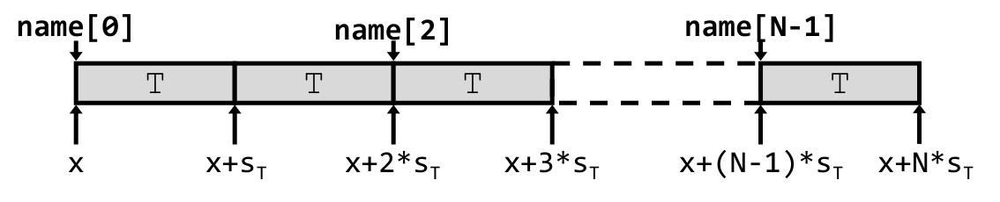
T가 적혀 있어 모든 칸의 크기가 \(s_T\)로 동일함을 나타냅니다. 상자 위쪽의 화살표와 이름표 name[0], name[2], name[N-1]은 각 원소가 어느 칸인지를 가리키고, 상자 아래쪽의 화살표와 수식 x, x+s_T, x+2*s_T, x+3*s_T, …, x+(N-1)*s_T, x+N*s_T는 각 칸의 경계 주소를 나타냅니다. 즉 위쪽 이름표와 아래쪽 주소는 같은 지점을 가리키는 두 가지 표기입니다. 중간의 점선은 원소가 계속 이어진다는 생략 표시이며, 오른쪽 끝의 x+N*s_T가 배열이 끝나는 바로 다음 주소라는 점도 읽어 둘 만합니다. 이 그림이 말하는 바는 단순합니다 — 배열은 같은 크기의 칸이 틈 없이 연속으로 놓인 것일 뿐이고, 따라서 임의의 원소 주소는 곱셈 한 번으로 구해집니다.\(i\)번째 원소의 주소
\[ \mathrm{adr}_i = \texttt{name} + i \times s_T \]
3.2절에서 동적 배열로 검산했던 바로 그 식입니다. 정적 배열과 동적 배열의 주소 산술이 같다는 3.3절의 결론이 여기서 하나의 공식으로 합쳐집니다.
5.2 구조체 (Structures)
선언은 다음과 같습니다.
struct name {
<T1> <m1>;
<T2> <m2>;
…
<TN> <mN>;
};메모리 레이아웃 — 모든 멤버 \(m_i\)를 선언 순서대로(in-order), 겹치지 않게(non-overlapping), 올바르게 정렬된 상태로(properly aligned) 담은 연속된 메모리 영역입니다. 배열과 달리 칸의 크기가 제각각이고, 정렬을 맞추기 위해 칸 사이에 패딩이 끼어듭니다.
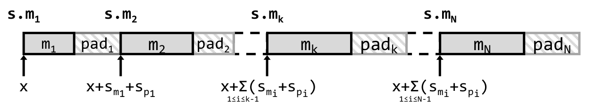
m₁, m₂, …, m_k, …, m_N과 그 뒤에 붙은 빗금 친 패딩 칸 pad₁, pad₂, …, pad_k, …, pad_N이 번갈아 나타납니다. 회색과 빗금의 대비가 이 그림의 핵심입니다 — 멤버는 실제 데이터를, 빗금은 정렬을 맞추려고 버린 바이트를 뜻하며, 패딩이 멤버 뒤에 붙는다는 배치에서 “다음 멤버를 올바른 주소로 밀어내는 것이 패딩의 역할”이라는 사실이 드러납니다. 상자 위의 s.m₁, s.m₂, s.m_k, s.m_N은 각 멤버를 C 문법으로 접근하는 표기이고, 상자 아래의 화살표와 수식 x, x+s_{m₁}+s_{p₁}, x+Σ_{1≤i≤k-1}(s_{m_i}+s_{p_i}), x+Σ_{1≤i≤N-1}(s_{m_i}+s_{p_i})는 각 멤버가 시작하는 주소입니다. 즉 \(k\)번째 멤버의 주소는 그 앞에 놓인 모든 멤버와 모든 패딩의 크기를 더한 값이며, 패딩을 빼먹으면 계산이 어긋납니다. 중간중간의 점선은 멤버가 계속 이어진다는 생략 표시입니다.\(k\)번째 멤버의 주소 — 구조체의 시작 주소에, 1번부터 \(k-1\)번까지 모든 멤버와 패딩의 크기를 더한 값입니다.
\[ \mathrm{Adr}_{m_k} \;=\; x + \sum_{1 \le i \le k-1}\left(s_{m_i} + s_{p_i}\right) \]
구조체의 크기
\[ s_s \;=\; \sum_{1 \le i \le N}\left(s_{m_i} + s_{p_i}\right) \]
합산 범위를 보면 마지막 멤버 뒤에도 패딩 \(s_{p_N}\)이 더해집니다. 뒤에 아무 멤버도 없는데 왜 패딩이 필요할까요.
강의의 설명은 이렇습니다 — 마지막 패딩은 구조체의 크기가 “그 멤버들 중 가장 큰 정렬 요구량의 다음 배수”가 되도록 정해집니다. 그리고 그 이유를 한 문장으로 덧붙입니다.
this comes in handy when declaring arrays of structs (all elements of the array will be automatically aligned)
구조체의 배열을 선언할 때 유용하기 때문입니다. 5.1절의 배열 공식 \(\mathrm{adr}_i = \texttt{name} + i \times s_T\)를 떠올려 보십시오. 이 식이 성립하려면 모든 원소가 똑같은 간격으로 놓여야 합니다. 그런데 구조체의 크기가 최대 정렬 요구량의 배수가 아니라면, 두 번째 원소부터는 첫 멤버의 정렬이 깨지게 됩니다.
즉 마지막 패딩은 구조체 하나를 위한 것이 아니라 그 구조체로 배열을 만들 미래를 위한 것입니다. 다음 절이 이를 구체적인 숫자로 보여 줍니다.
5.3 예시: 구조체의 배열 (Example: Arrays of Structures)
지켜야 할 두 조건은 다음과 같습니다.
- 구조체 전체의 길이가 \(K\)의 배수여야 합니다 (\(K\)는 멤버들의 최대 정렬 요구량).
- 모든 원소에 대해 정렬 요구가 만족되어야 합니다.
struct S2 {
double v;
int i[2];
char c;
} a[10];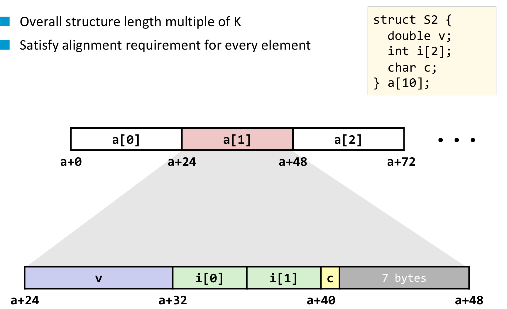
struct S2로 만든 배열 a[10]이 메모리에 놓인 모습을 두 층으로 보여 주는 그림입니다. 위층은 배열 전체의 큰 그림으로, 같은 크기의 칸 a[0], a[1], a[2]가 줄지어 있고 그 아래에 경계 주소 a+0, a+24, a+48, a+72가 적혀 있습니다 — 즉 원소 하나가 정확히 24바이트이고 배열은 그 간격으로 반복됩니다. 가운데 분홍색으로 강조된 a[1]에서 아래로 뻗은 회색 삼각형이 그 원소 하나를 확대한 것이 아래층입니다. 아래층의 막대는 네 부분으로 색이 나뉘어 있습니다 — 보라색 v가 a+24부터 a+32까지 8바이트(double), 연두색 i[0]과 i[1]이 a+32부터 a+40까지 각 4바이트(int 두 개), 노란색 c가 a+40에서 1바이트(char), 그리고 회색으로 칠해진 7 bytes가 a+41부터 a+48까지의 패딩입니다. 회색 칸에 바이트 수가 직접 적혀 있다는 점이 이 그림의 친절한 부분입니다. 데이터가 실제로 쓰는 것은 8 + 8 + 1 = 17바이트인데 구조체 크기가 24바이트인 이유가 바로 이 7바이트에 있고, 그 7바이트 덕분에 다음 원소 a[2]의 double v가 다시 8의 배수인 a+48에서 시작할 수 있습니다.숫자를 직접 따라가 보면 5.2절의 두 공식이 그대로 작동합니다.
| 멤버 | 크기 | 정렬 요구 | 오프셋 | 뒤따르는 패딩 |
|---|---|---|---|---|
double v |
8 | 8 | 0 | 0 |
int i[0] |
4 | 4 | 8 | 0 |
int i[1] |
4 | 4 | 12 | 0 |
char c |
1 | 1 | 16 | 7 |
| 합계 24 |
- 멤버들의 최대 정렬 요구량은 \(K = 8\)(
double v)입니다. - 패딩 없이 더하면 \(8 + 4 + 4 + 1 = 17\)바이트인데, 이는 8의 배수가 아닙니다.
- 8의 배수 중 17 이상인 가장 작은 값은 24이므로, 마지막에 \(24 - 17 = 7\)바이트의 패딩이 붙습니다.
- 그 결과 원소 간격이 24바이트로 고정되어
a[0]은a+0,a[1]은a+24,a[2]는a+48에 놓이고, 모든 원소의double v가 8의 배수 주소에서 시작합니다.
마지막 항목이 5.2절에서 예고한 바로 그 효과입니다. 만약 마지막 패딩이 없어 구조체가 17바이트였다면 a[1]은 a+17에서 시작했을 것이고, 그 안의 double v도 a+17에 놓여 8바이트 정렬이 곧바로 깨졌을 것입니다.
5.4 공용체 (Unions)
선언 형식은 구조체와 똑같아 보입니다.
union name {
<T1> <m1>;
<T2> <m2>;
…
<TN> <mN>;
};메모리 레이아웃 — 모든 멤버 \(m_i\)를 담은 연속된 메모리 영역이고 올바르게 정렬되어 있다는 점까지는 구조체와 같습니다. 그러나 결정적으로 다른 한 문장이 붙습니다.
all members are located at offset 0 and overlap in memory
모든 멤버가 오프셋 0에 놓이며 메모리에서 서로 겹칩니다.
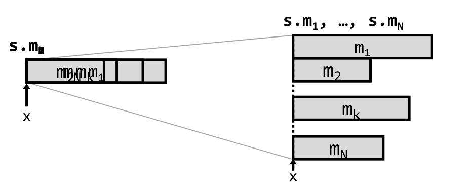
m₁, m₂, m_k, m_N 이름표가 모두 같은 자리에 포개져 인쇄되어 있습니다 — 글자가 겹쳐 읽기 힘든 것이 오류가 아니라, 모든 멤버가 문자 그대로 같은 시작 위치를 공유한다는 사실을 그림으로 나타낸 것입니다. 상자 왼쪽 아래의 화살표와 x가 그 공통 시작 주소입니다. 오른쪽은 그 겹쳐진 상태를 풀어서 층층이 늘어놓은 것으로, m₁, m₂, …, m_k, …, m_N의 막대가 각각 다른 길이로 그려져 있고 모두 왼쪽 끝이 같은 수직선에 맞춰져 있으며 그 아래에 다시 x가 적혀 있습니다. 즉 멤버마다 길이(크기)는 다르지만 시작점은 예외 없이 동일합니다. 왼쪽 상자와 오른쪽 목록을 잇는 두 개의 가는 선이 “이 하나의 영역이 곧 저 모든 멤버”라는 대응을 나타내며, 상자의 폭이 가장 긴 막대에 맞춰져 있다는 점에서 공용체의 크기가 최대 멤버 크기로 정해진다는 사실도 함께 읽힙니다.겹친다는 성질에서 나머지가 전부 따라 나옵니다.
- 정렬 — 공용체의 정렬은 멤버들의 정렬 요구량 중 최댓값입니다. 모든 멤버가 같은 자리에서 시작하므로, 가장 까다로운 멤버를 만족시키면 나머지는 자동으로 만족됩니다.
- \(k\)번째 멤버의 주소 — 공용체의 시작 주소 그 자체입니다.
\[ \mathrm{adr}_{m_k} = x \]
- 공용체의 크기 — 멤버 크기의 최댓값입니다.
\[ s_u = \max_{1 \le i \le N} \left(s_{m_i}\right) \]
두 자료구조의 차이는 연산자 하나로 압축됩니다.
| 멤버의 위치 | 크기 | |
|---|---|---|
| 구조체 | 순서대로 이어 붙임 | \(s_s = \sum_i (s_{m_i} + s_{p_i})\) |
| 공용체 | 전부 오프셋 0 | \(s_u = \max_i (s_{m_i})\) |
구조체는 모든 멤버를 동시에 담아야 하므로 크기를 더하고, 공용체는 한 번에 하나의 멤버만 유효하다고 보므로 가장 큰 것 하나가 들어갈 자리만 확보합니다. 공용체에 패딩 항이 등장하지 않는 것도 같은 이유입니다 — 멤버 사이에 순서가 없으니 다음 멤버를 밀어낼 일 자체가 없습니다.
4.1절의 관점에서 다시 보면, 공용체는 같은 바이트 묶음을 여러 타입으로 해석하는 장치입니다. 기계에는 애초에 타입이 없고 연속된 바이트만 있으므로, 그 바이트를 int로 읽을지 float로 읽을지는 해석의 문제일 뿐입니다. 공용체는 그 해석의 자유를 언어 문법으로 노출한 것입니다.
6. 파라미터 전달 (Parameter Passing)
2.3절에서 미뤄 둔 질문 — 함수 파라미터는 어디에 놓이는가 — 에 답할 차례입니다.
6.1 호출자와 피호출자 (Caller vs callee)
- 호출자(caller) — 다른 함수를 호출하는 쪽의 함수
- 피호출자(callee) — 호출되는 쪽의 함수
호출자는 피호출자에게 인자를 넘길 수 있으며, 방법은 두 가지입니다 — 값 전달(pass by value)과 참조 전달(pass by reference).
int foo(int a, int b)
{
a = 2*a;
return a + b;
}
int bar(void)
{
int x = 5, y = 6, z;
z = foo(x, y);
}이 코드에서 bar가 호출자, foo가 피호출자입니다. foo가 자기 파라미터 a를 바꾸는데, 그 변경이 bar의 x에 영향을 줄까요. 답은 어느 방식으로 넘겼느냐에 달려 있습니다.
6.2 값 전달 (Pass by value)
- 값의 복사본을 피호출자에게 넘깁니다.
- 따라서 인자에 가한 수정은 피호출자 안에서만 유효합니다.
- 스칼라 타입은 값으로 전달됩니다.
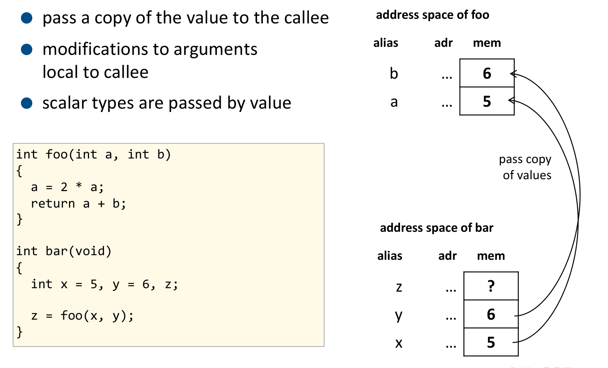
address space of foo, 아래쪽이 address space of bar이며 각각 앞서 쓰던 alias/adr/mem 표로 그려져 있습니다. 아래쪽 bar에는 x에 5, y에 6, z에 ?(아직 대입 전이므로 값을 알 수 없음)가 들어 있고, 위쪽 foo에는 a에 5, b에 6이 들어 있습니다. 두 덩어리를 잇는 것은 오른쪽의 두 개의 곡선 화살표로, bar의 x 칸과 y 칸에서 각각 출발해 foo의 a 칸과 b 칸으로 들어가며, 화살표 옆에 “pass copy of values”라고 적혀 있습니다. 여기서 읽어야 할 것은 foo의 a와 bar의 x가 서로 다른 메모리 칸이라는 사실입니다 — 값 5가 같을 뿐 칸은 별개이므로, foo가 a = 2*a로 a를 10으로 만들어도 아래쪽 x의 칸에 적힌 5는 끝까지 그대로입니다.6.3 참조 전달 (Pass by reference)
- 값의 복사본 대신 그 값이 놓인 메모리 주소의 복사본을 피호출자에게 넘깁니다.
- 따라서 인자에 가한 수정이 원본 값에 영향을 줍니다.
앞의 코드를 참조 전달로 고치면 이렇게 됩니다.
int foo(int *a, int b)
{
*a = 2 * *a;
return *a + b;
}
int bar(void)
{
int x = 5, y = 6, z;
z = foo(&x, y);
}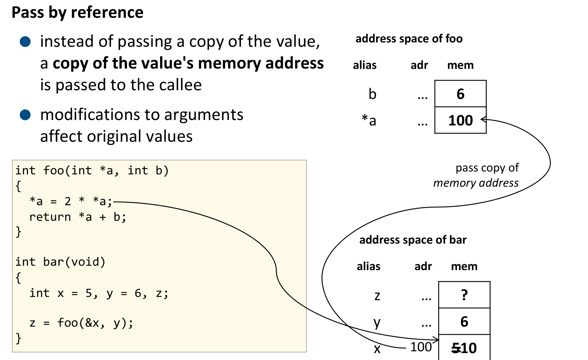
address space of bar에는 z에 ?, y에 6이 있고, x의 칸이 결정적입니다 — 칸 왼쪽에 주소 100이 적혀 있고 칸 안의 값은 5에 취소선이 그어진 채 10으로 바뀌어 있습니다. 위쪽 address space of foo에는 b에 6이, 그리고 *a로 표기된 칸에 100이 들어 있습니다 — foo가 받은 것은 값 5가 아니라 x가 놓인 주소 100입니다. 오른쪽의 곡선 화살표에 “pass copy of memory address”라고 적혀 bar에서 foo로 넘어간 것이 주소임을 명시하고, 왼쪽 코드 상자의 *a = 2 * *a; 줄에서 뻗어 나온 긴 곡선이 아래쪽 x의 칸을 직접 가리킵니다. 이 긴 화살표가 그림의 요지입니다 — foo는 자기 주소 공간의 *a 칸을 건드린 것이 아니라, 그 칸에 적힌 주소 100을 따라가 bar의 x 칸을 고쳤습니다. 그래서 x의 값이 5에서 10으로 바뀌고, 취소선이 그 변경을 표시합니다.주소로 접근하는 방식은 어셈블리 코드에서 그대로 눈에 보입니다. x86-64에서 첫 번째 정수 인자는 %rdi에, 두 번째는 %esi에 실려 오므로, 포인터 a는 %rdi에 담긴 주소가 됩니다.
0000000000000000 <foo2>:
0: mov (%rdi),%eax # load a(=5)
2: add %eax,%eax # 5+5
4: mov %eax,(%rdi) # store a(=10)
6: add %esi,%eax # b + 2* *a
8: ret괄호의 유무가 전부입니다. %rdi는 주소 자체이고 (%rdi)는 그 주소가 가리키는 메모리입니다. 0번 줄이 그 메모리에서 5를 읽어 오고, 4번 줄이 계산한 10을 같은 메모리에 되돌려 씁니다. 호출자의 변수가 바뀌는 지점이 바로 이 mov %eax,(%rdi) 한 줄입니다.
| 넘기는 것 | 피호출자의 수정이 원본에 미치는 영향 | 어셈블리에서의 모습 | |
|---|---|---|---|
| 값 전달 | 값의 복사본 | 없음 | 레지스터 값을 직접 연산 |
| 참조 전달 | 주소의 복사본 | 있음 | (%rdi)처럼 역참조가 등장 |
주의할 점은 참조 전달에서도 “복사본”을 넘긴다는 사실입니다. 복사되는 대상이 값이 아니라 주소일 뿐입니다. 그래서 피호출자가 a 자신(포인터 변수)에 다른 주소를 대입해도 호출자의 포인터는 바뀌지 않으며, 호출자의 포인터까지 바꾸려면 3.1절의 이중 포인터 int **가 필요해집니다.
배열은 언제나 참조로 전달됩니다. 3.3절에서 배열이 C에서 포인터처럼 취급된다는 것을 확인했으므로 이는 당연한 귀결입니다.
int foo(int *a)
{
a[2] = 5;
}
int bar(void)
{
int x[10] = {0,1,2,3,4,5,6,7,8,9};
printf("%d", x[2]); // prints 2
foo(x);
printf("%d", x[2]); // prints 5
}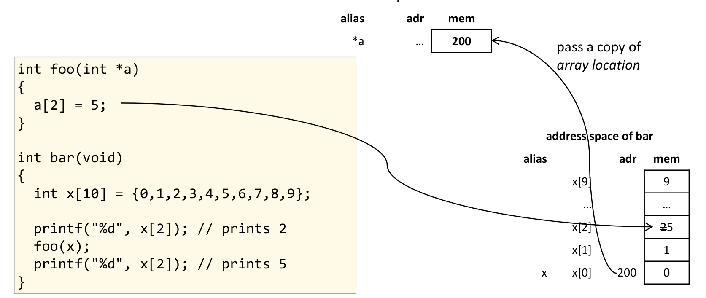
address space of bar에는 배열 x가 세로로 그려져 있어 x[0]에 0, x[1]에 1, x[2], …, x[9]에 9가 들어 있고, x[0] 옆에 배열의 시작 주소 200이 적혀 있습니다. 오른쪽 위 address space of foo에는 단 한 칸, *a에 200이 들어 있습니다 — foo가 받은 것은 배열 열 개의 복사본이 아니라 시작 주소 하나뿐이며, 이를 잇는 곡선 화살표에 “pass a copy of array location”이라고 적혀 있습니다. 왼쪽 코드 상자의 a[2] = 5; 줄에서 출발한 긴 곡선이 오른쪽 x[2] 칸을 직접 가리키고, 그 칸의 값은 2에 취소선이 그어진 채 5로 바뀌어 있습니다. bar가 foo 호출 전후로 같은 x[2]를 출력하는데 결과가 2에서 5로 달라지는 이유가 이 한 장에 담겨 있습니다 — 배열은 이름 자체가 주소이므로 foo(x)는 이미 참조 전달입니다.이 경우의 어셈블리는 더 짧습니다.
0000000000000000 <foo3>:
0: movl $0x5,0x8(%rdi) # mem[rdi+8]=5
7: ret0x8(%rdi)는 %rdi에 담긴 주소에서 8바이트 떨어진 곳을 뜻합니다. a[2]에서 int가 4바이트이므로 오프셋은 \(2 \times 4 = 8\) — 5.1절의 배열 주소 공식 \(\mathrm{adr}_i = \texttt{name} + i \times s_T\)가 기계어 명령의 주소 지정 방식(addressing mode) 안에 그대로 들어 있습니다. 고급 언어의 배열 인덱싱이 별도의 코드 없이 한 줄로 끝나는 이유가 여기 있습니다.
6.4 명령행 파라미터 (Command line parameters)
파라미터 전달의 마지막 사례는 프로그램 자신이 받는 인자입니다. 명령행 파라미터는 main에 전달됩니다.
argc— 인자의 개수(number of arguments)argv[]—char를 가리키는 포인터의 배열(= 문자열들)argv[0]은 프로그램 이름입니다. 따라서argc >= 1이 항상 성립합니다.
int main(int argc, char *argv[])
{
int i;
for (i=0; i<argc; i++) {
printf("argv[%d] = '%s'\n",
i, argv[i]);
}
return 0;
}char *argv[]라는 선언을 3.3절의 언어로 읽으면 “char *를 원소로 갖는 배열”, 즉 포인터의 배열입니다. 배열은 포인터처럼 취급되므로 argv 자체는 결국 char **와 같고, argv[i]는 \(i\)번째 문자열의 시작 주소이며, 그 주소를 %s가 따라가 문자열을 출력합니다. 이 한 줄의 선언 안에 3장에서 다룬 이중 포인터 · 배열-포인터 동치 · 참조 전달이 모두 들어 있는 셈입니다.
7. 요약 (Summary)
강의가 스스로 정리한 결론은 다음과 같습니다.
- 데이터 타입과 정렬은 기계에 따라 다르다(machine specific).
- 프로그래밍 언어는 기계의 데이터 타입에 대응(map)된다
- 정렬 요구는 컴파일러가 알아서 처리한다
- 복합 데이터 타입은 고급 언어에만 존재한다.
- 기계는 스칼라(와 벡터) 데이터 타입만 안다
- 복합 데이터 타입은 연속된 메모리 블록에 대응된다
- 필드의 오프셋은 컴파일러가 계산하고 관리한다
- 변수는 데이터가 실제로 저장된 메모리 주소에 붙인 이름표(label)다.
- 포인터는 메모리 주소를 값으로 담은 변수다
- 함수 사이의 파라미터 전달
- 값 전달 = 데이터의 복사본을 넘기는 것
- 참조 전달 = 데이터의 메모리 주소를 넘기는 것
정리하며 (Closing Remarks)
이번 강의의 논증 사슬을 단계별로 압축하면 다음과 같습니다.
| 단계 | 내용 | 근거 |
|---|---|---|
| ① 관측의 제시 | 같은 프로그램을 두 번 실행하면 모든 주소가 달라진다 | ASLR 켜짐/꺼짐 비교 |
| ② 모순처럼 보이는 관측 | 두 프로세스가 같은 주소를 출력하면서 global_int는 각자, shared_int는 함께 센다 |
./layout 2 로그 |
| ③ 질문의 확립 | 주소라는 숫자가 물리적 메모리 칸의 번호가 아닐 수 있다 — 한 겹이 끼어 있다 | “How is that possible?” |
| ④ 언어의 정비 (1) | 변수 이름은 주소의 별칭이다 — a는 mem[16]으로 번역된다 |
<type> <name>의 두 귀결 |
| ⑤ 언어의 정비 (2) | 포인터는 그 주소를 값으로 담은 평범한 변수다 — 그래서 int **가 성립한다 |
ap가 주소 28에 놓임 |
| ⑥ 배열-포인터 동치 | buf와 &buf[0], p와 &p[0]이 같은 주소를 출력한다 |
arraysNpointers.c |
| ⑦ 동치의 한계 | 그러나 sizeof는 배열과 포인터를 구별한다 |
NOT sizeof(buf)! |
| ⑧ 기계의 빈약한 타입 | 기계에는 집합 타입이 없다 — 연속된 바이트뿐이다 | No aggregate types |
| ⑨ 빈약함의 대가 = 정렬 | \(K\)바이트 타입은 \(K\)의 배수 주소에 놓여야 한다 | 4바이트 접근 단위 · 페이지 경계 |
| ⑩ 정렬의 비용 = 패딩 | 정렬을 맞추려 버려진 바이트가 실측된다 (18바이트) | varalign.c 출력 |
| ⑪ 허구의 재구성 (1) | 배열은 \(\mathrm{adr}_i = \texttt{name} + i \times s_T\)로 환원된다 | 곱셈 한 번 + 덧셈 한 번 |
| ⑫ 허구의 재구성 (2) | 구조체는 \(\sum(s_{m_i}+s_{p_i})\), 공용체는 \(\max(s_{m_i})\)로 환원된다 | 멤버 순서 유무의 차이 |
| ⑬ 마지막 패딩의 정체 | 구조체의 꼬리 패딩은 그 구조체로 만들 배열을 위한 것이다 | struct S2 → 17바이트가 24바이트로 |
| ⑭ 전달 방식의 귀결 | 값 전달은 값의 복사본, 참조 전달은 주소의 복사본을 넘긴다 | foo(x) 대 foo(&x) |
| ⑮ 어셈블리에서의 확인 | 참조 전달은 (%rdi)라는 역참조로, 배열 인덱싱은 0x8(%rdi)라는 오프셋으로 나타난다 |
foo2 / foo3 디스어셈블 |